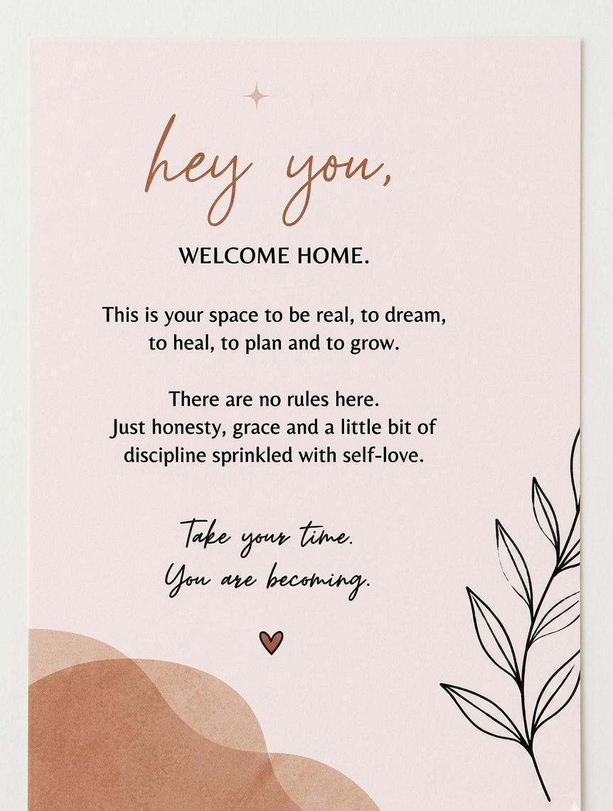
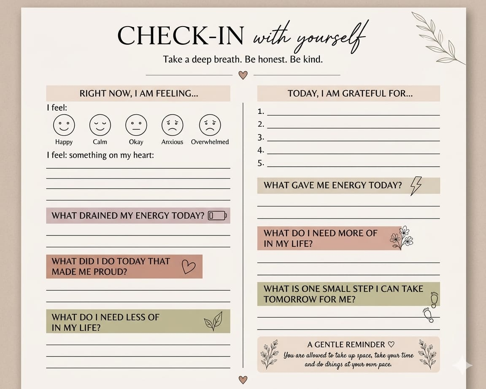
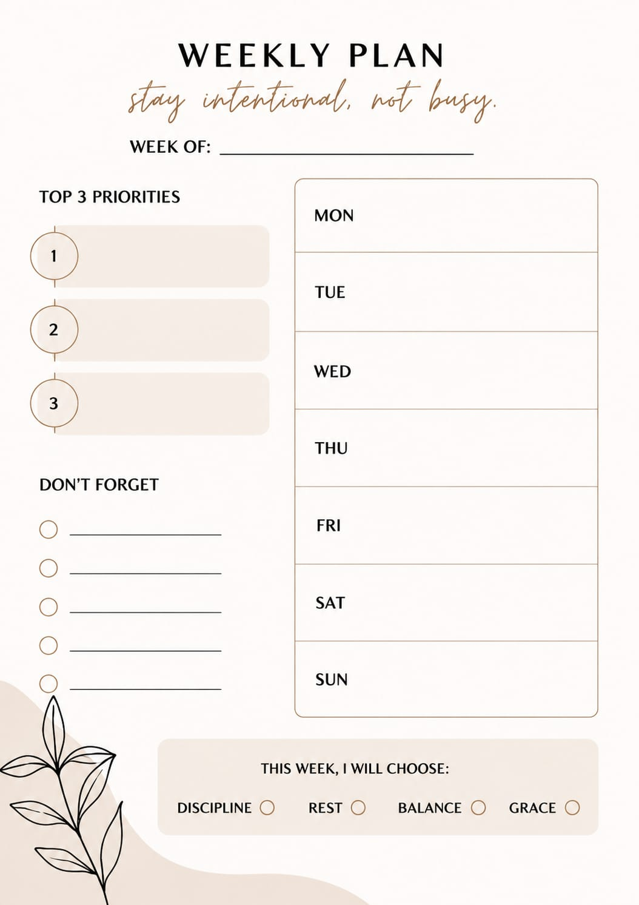
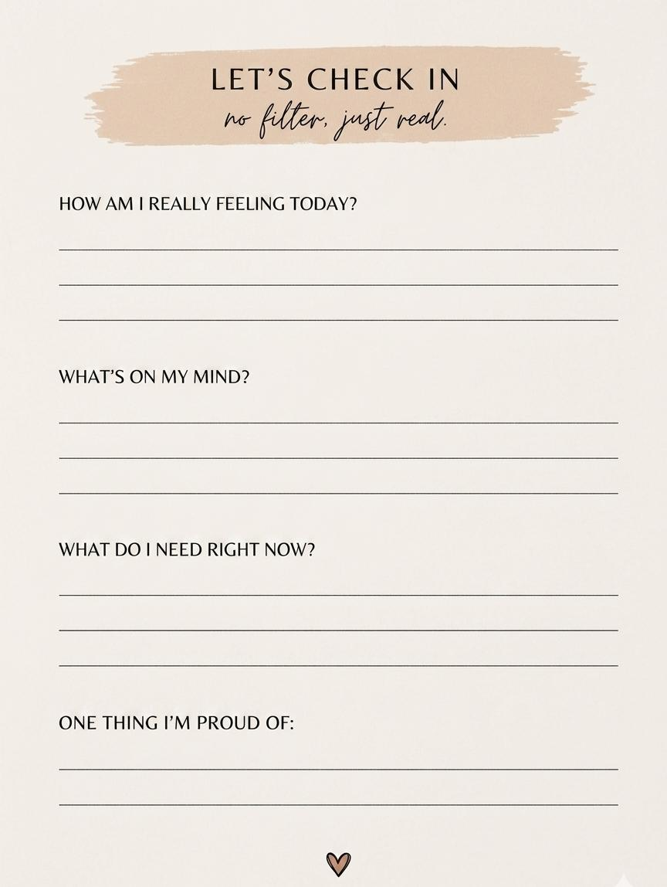
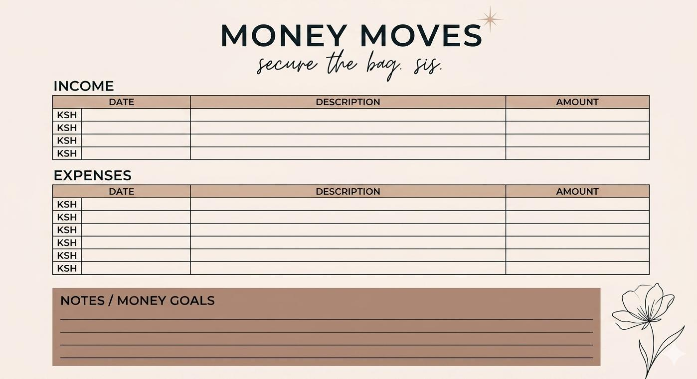
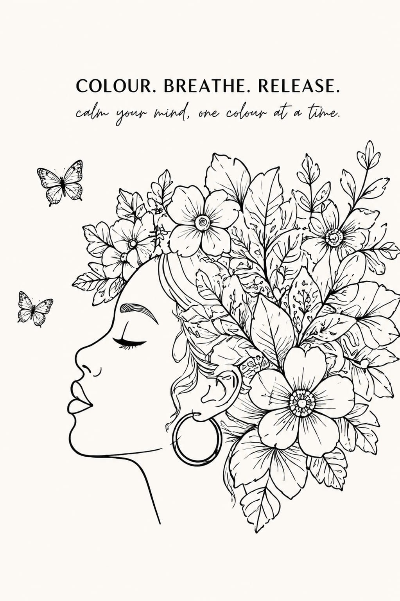

A Gentle Beginning
Every journey needs a soft landing space. The introduction page sets a rule-free sanctuary grounded in honesty, grace, and steady self-love to anchor your thoughts as you step inside.

Emotional Horizons
An expansive two-page canvas mapping out how your heart truly feels. Track subtle changes, unpack raw sentiments, highlight hidden personal celebrations, and hold onto quiet daily reminders.

Intentional Living
Move away from overwhelming schedules. This layout empowers you to pick three core seasonal priorities while mapping out your weekly timeline alongside gentle choices for discipline, rest, and balance.

No Filter Check-Ins
For those fast-paced days where complexity needs simple clarity. A minimalist layout letting you vent exactly what is taking up real estate in your mind without hesitation.

Mindful Abundance
Aligning financial stability with intentional living. Seamlessly track incoming funds and daily expenses under a beautifully designed tracker crafted to capture your target savings goals clearly.

Artistic Meditations
A serene, creative pause designed to help you calm your mind, one colour at a time. This therapeutic coloring space features intricate botanical artwork and powerful affirmations to help you actively release what no longer serves you and protect your peace.